Project - Spectrum
Spectrum is an application that explores the use of cutting edge Natural Language Understanding models on transcripts of lectures. It aims to help instructors, course designers, and students in reflective teaching and learning processes.
Challenge
Instructors have very few channels for actionable feedback, and students have limited access to the lecture details after class.Goal
To serve users with a diverse reflective tool by offering the distribution of concepts and topics discussed over the course from a macro-level view.Work
This project started on 2019 June, and I joined on 2019 October.The project team includes 6 members: 1 project manager, 3 UX researchers/designers, and 3 developers, among which one designer is also a developer.
My responsibility as a UX researcher focuses on 1) usability analysis and 2) new function exploration mainly from the student users perspective. The following 2 examples show the two focuses of my work: finding first-time user usability problems, and optimizing the search function.
Examples
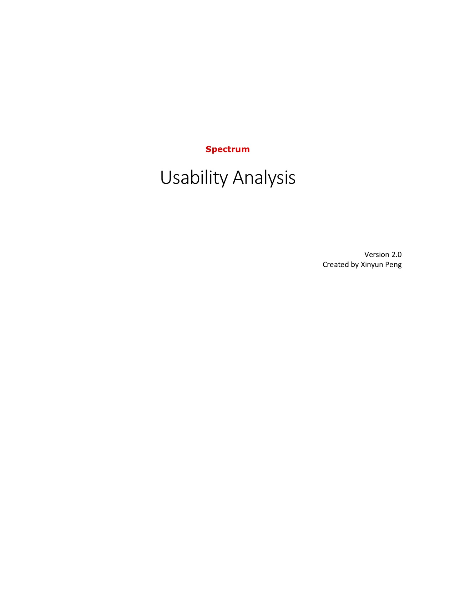
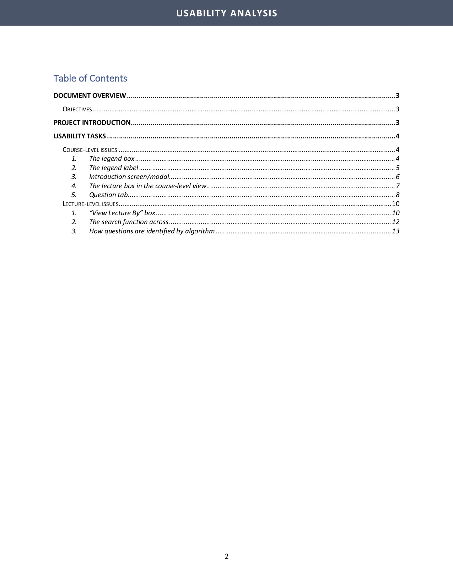
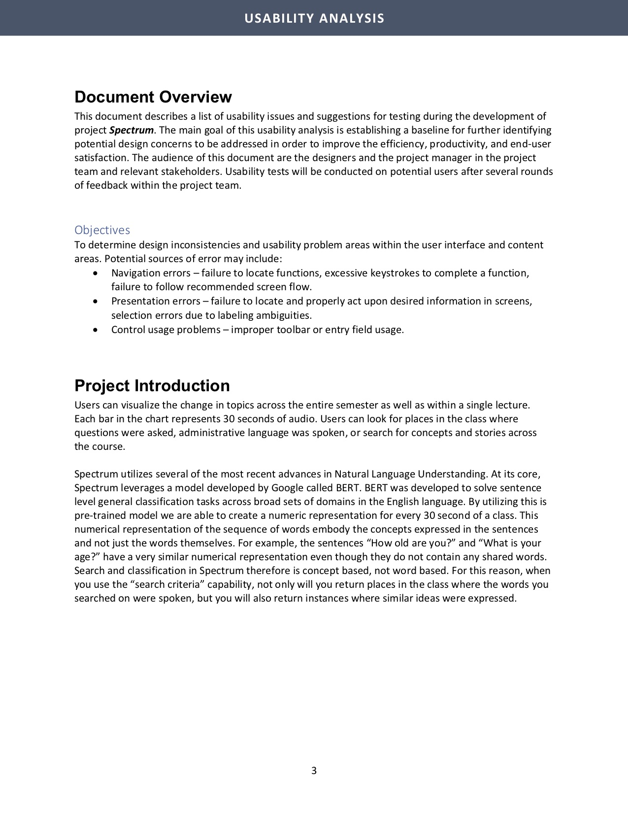
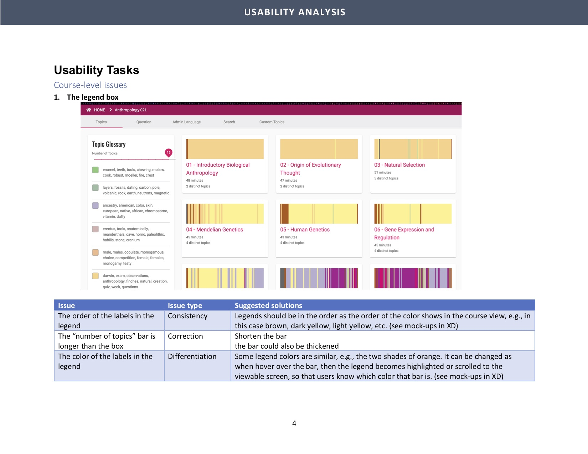
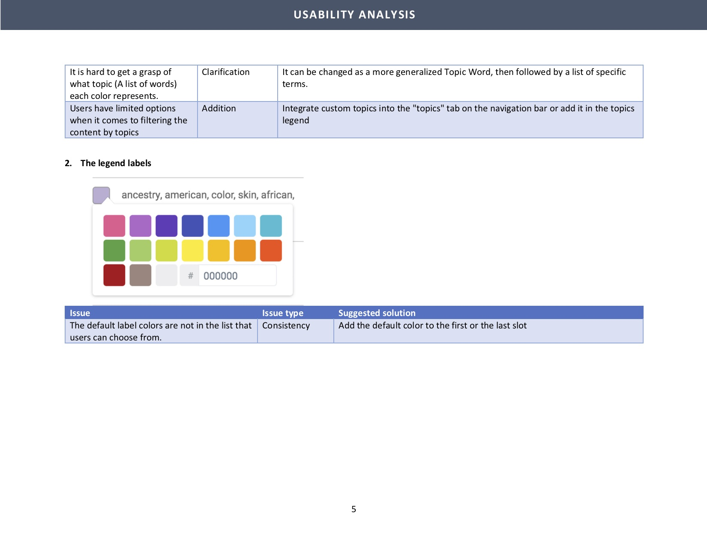
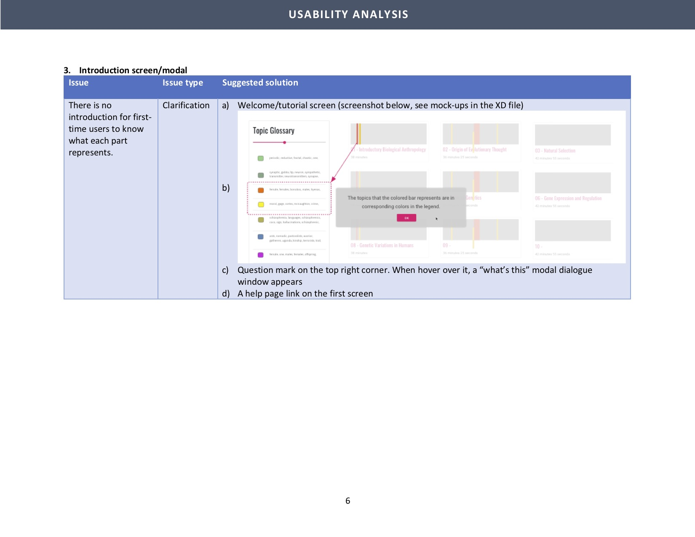
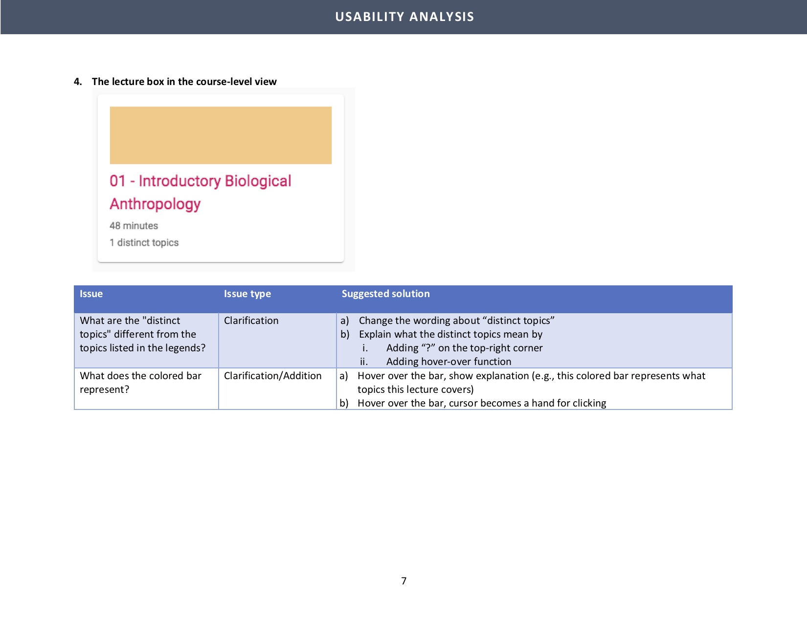
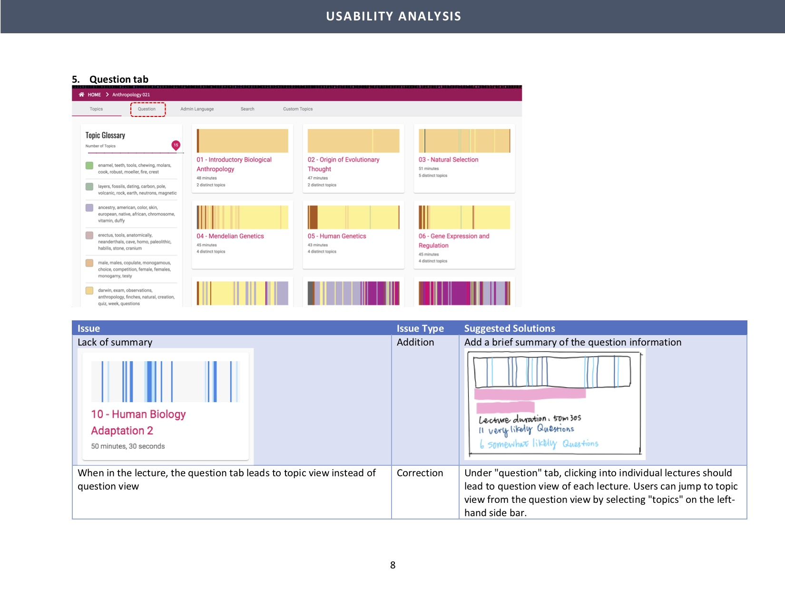
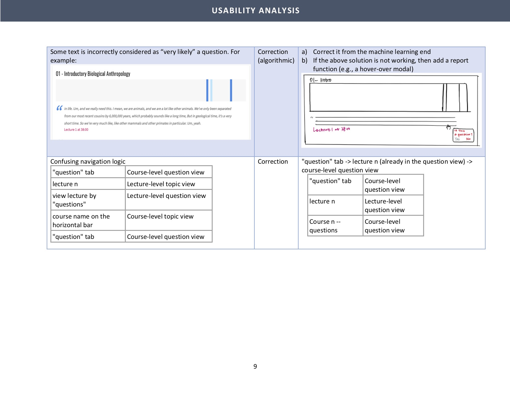
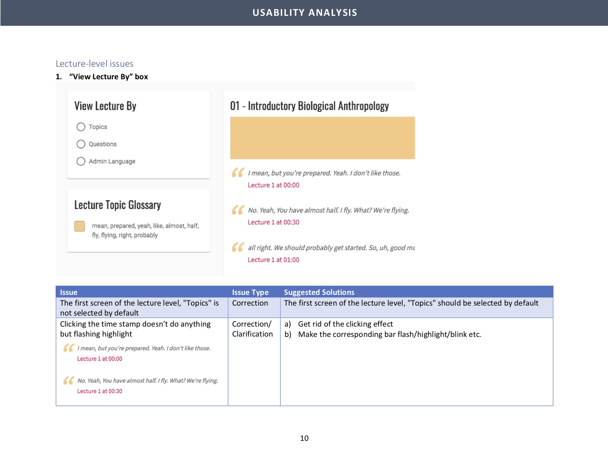
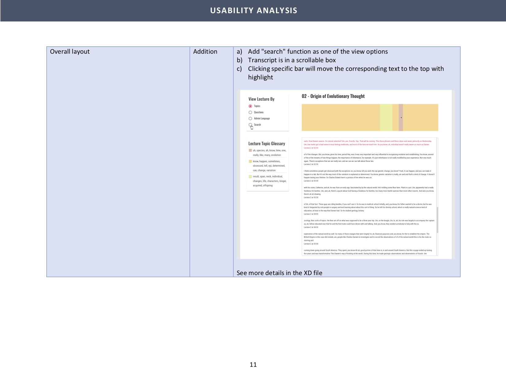
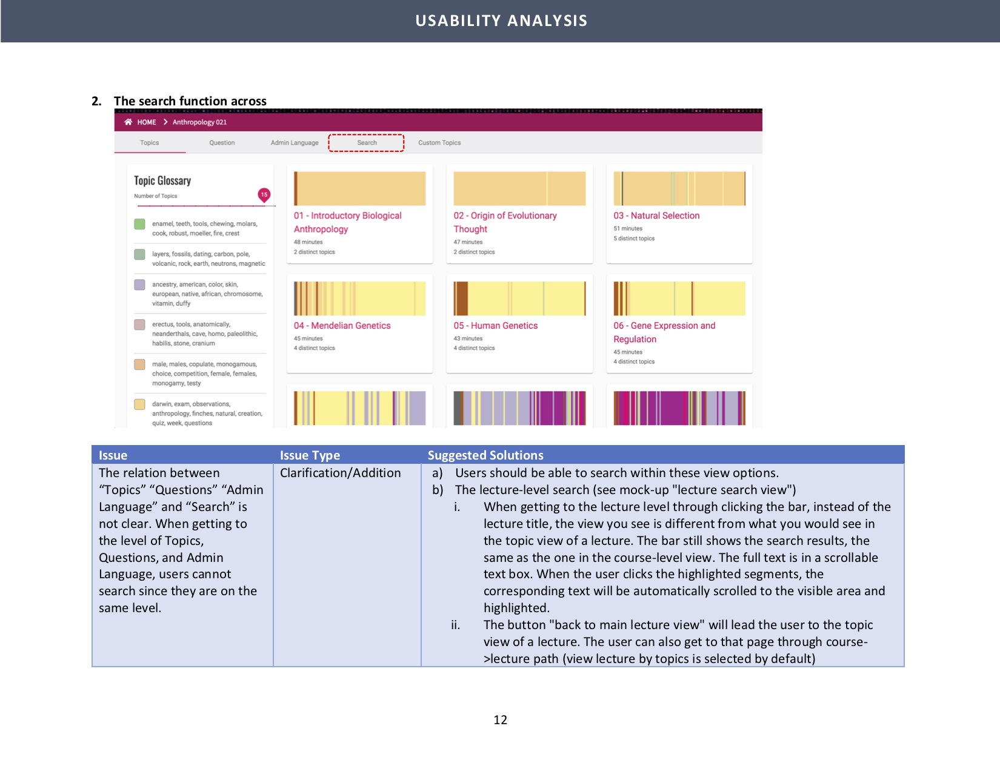
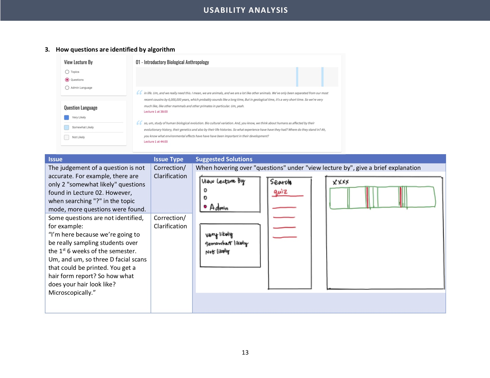